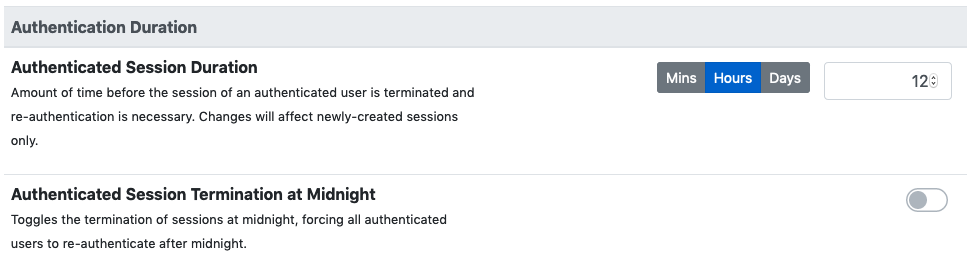
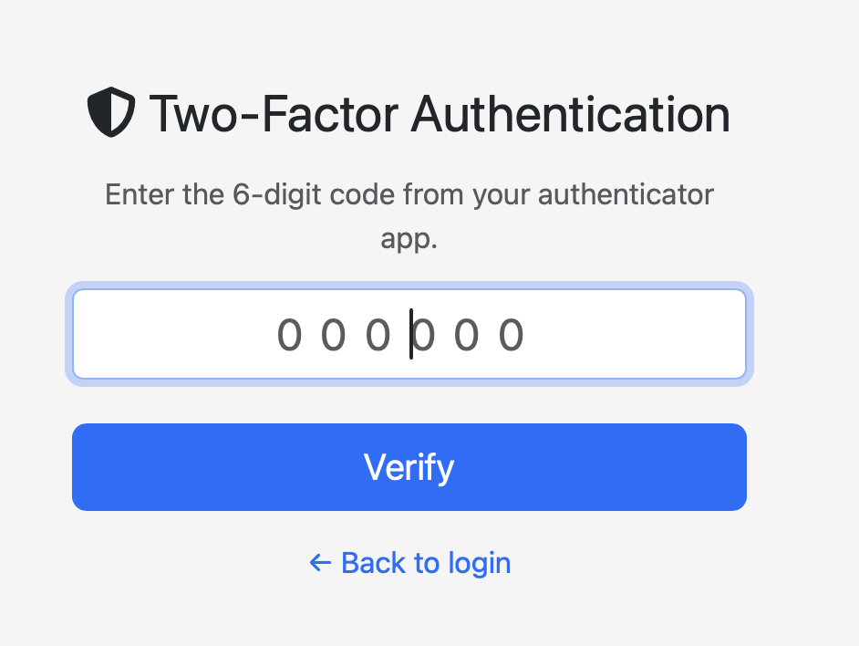
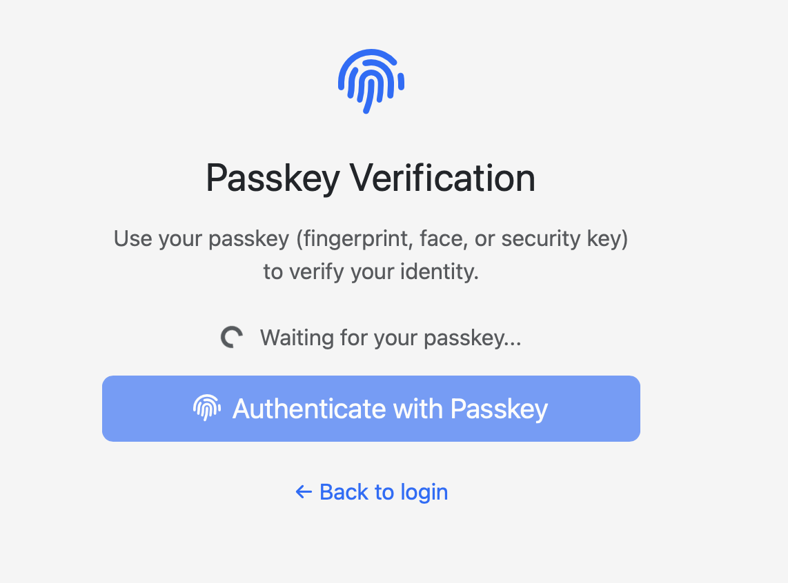
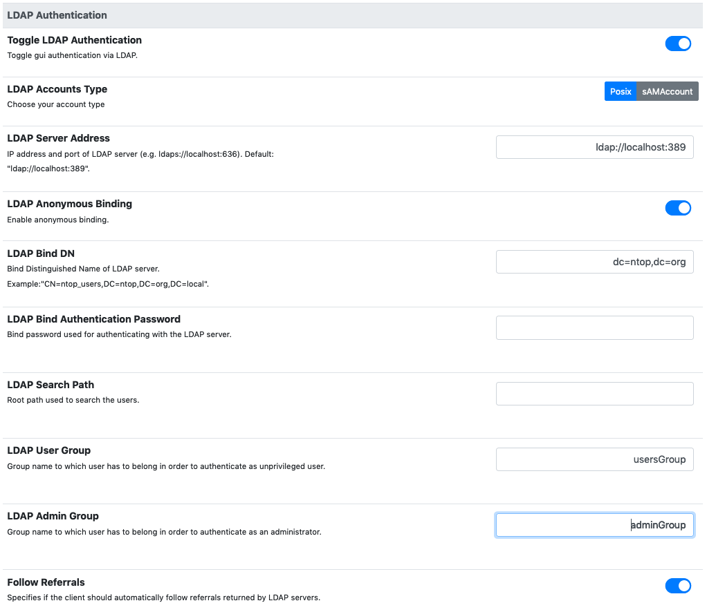
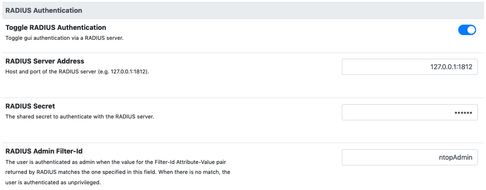
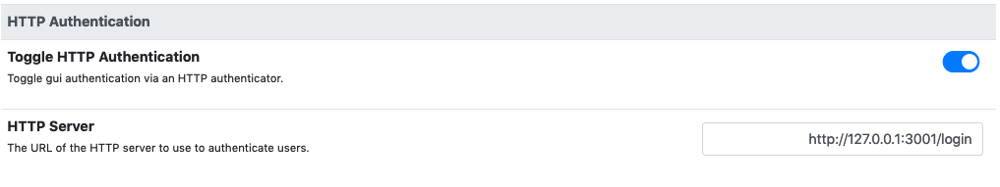
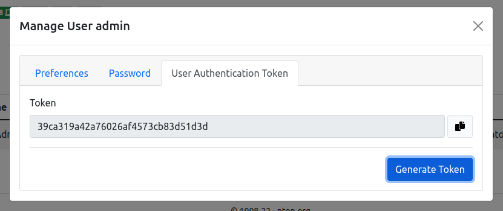

Аутентификация пользователя
Только прошедшие проверку подлинности пользователи могут получить доступ к сети ntopng GUI. После успешная аутентификация, ntopng создает аутентифицированный сеанс и отправьте его веб-пользователю в файле cookie HTTP. С этого момента, веб-пользователь сможет передать полученный сеанс обратно на ntopng внутри другого файла cookie HTTP вместе с каждым сделанным запросом.
Продолжительность сеанса настраивается, как показано на следующем рисунке. и может длиться от 1 минуты до 7 дней. Чем короче сеанс продолжительность, тем безопаснее доступ к ntopng. Действительно, скомпрометированная сессия может быть использована злоумышленником на протяжении всего время продолжительности. Администратор может выбрать продолжительность, может гарантировать достаточную безопасность, в зависимости от среды операции. Администратор также может принять решение о прекращении всех активные сеансы в полночь, просто переключив предпочтения показано на рисунке. Это заставит всех веб-пользователей повторно пройти аутентификацию, независимо от остаточной продолжительности сеанса.

ntopng Продолжительность аутентификации
ntopng поддерживает несколько методов аутентификации пользователей в ntopng GUI. Индивидуальные методы можно включить в настройках ntopng «Аутентификация пользователя». Некоторые методы, в том числе OpenID Connect (OIDC) / SSO и LDAP, требуется лицензия Pro (см. Доступные версии и лицензирование).

ntopng Методы аутентификации
Можно включить более одного метода одновременно. В этом случае, когда пользователь пытается пройти аутентификацию, включенные методы аутентификации будут опробованы в том же порядке сверху вниз, как они указаны в настройках. Если хотя бы одна из аутентификаций методы успешны, то пользователю разрешен доступ к сети GUI.
Локальная аутентификация
Этот метод аутентификации включен по умолчанию при установке ntopng. Он будет использовать учетные данные пользователей настроен через ntopng GUI для аутентификации новых пользователей.
Многофакторная аутентификация
Многофакторная аутентификация (MFA) — это система безопасности, которая требует от пользователей предоставления двух или более факторов проверки для получения доступа к такому ресурсу, как приложение, онлайн-учетная запись или VPN. Вы можете включить MFA для существующего пользователя, щелкнув вкладку MFA.

Включить пользователя MFA
Вам необходимо отсканировать QR-код с помощью приложения для проверки подлинности одноразового пароля (TOTP), такого как Google Authenticator, Authy или аналогичного. Готово: вам нужно ввести OPT (одноразовый пароль), сгенерированный приложением, в поле аутентификации и нажать кнопку «Включить».

Пользователь с включенным MFA
Каждый раз, когда вы входите в систему ntopng, используя имя пользователя и пароль с пользователем с включенным MFA, ntopng показывает вам страницу, где вам нужно указать OTP.

Вход пользователя с включенным MFA
Если вам не удастся ввести код MFA, вход не будет завершен.
Примечание
Поскольку запрос OTP невозможен, когда имя пользователя и пароль отправляются вместе с запросом (например, curl -u user:password с помощью REST API), такие запросы отклоняются для пользователей с включенным MFA или паролем. Пожалуйста, используйте Аутентификация на основе токенов вместо.
Примечание
MFA и пароль нельзя включить одновременно. Поэтому, если вы включите MFA, вы не сможете включить пароль и наоборот.
Ключ доступа
Аутентификация с помощью пароля — это метод входа без пароля, который позволяет вам входить на веб-сайты и в приложения, используя тот же способ разблокировки устройства, например с помощью отпечатка пальца, сканирования лица или PIN-кода блокировки экрана. Он предназначен для полной замены традиционных паролей, предлагая значительно более безопасную и быструю работу. В ntopng можно включить реализацию метода многофакторной аутентификации.
Ключ доступа будет работать только в том случае, если соблюдены выбранные условия:
Он работает только через безопасное соединение TLS 1.2+ (за исключением localhost во время разработки). Это означает, что вы должны включить HTTPS на ntopng (-W <https порт>). Чтобы аутентификация по паролю работала, ваш сервер HTTP должен использовать HTTPS с действительным, надежным сертификатом TLS и современными алгоритмами хеширования. Алгоритм подписи должен использовать семейство SHA-2 (например, SHA-256). SHA-1 больше не считается безопасным и отвергается современными платформами. Простой способ создать действительный сертификат, подходящий для ключа доступа, — использовать Let’s Encrypt, который можно использовать, как описано в этом посте. https://www.ntop.org/securing-ntopng-with-ssl-and-lets-encrypt/.
Чтобы аутентификация по паролю работала, ваш сервер HTTP должен использовать HTTPS с действительным, надежным сертификатом TLS и современными алгоритмами хеширования. Алгоритм подписи должен использовать семейство SHA-2 (например, SHA-256). SHA-1 больше не считается безопасным и отвергается современными платформами. Простой способ создать действительный сертификат, подходящий для пароля, — это использовать Let’s Encrypt, который можно использовать, как описано в этом посте. https://www.ntop.org/securing-ntopng-with-ssl-and-lets-encrypt/.
Как и в случае с MFA, вы можете включить пароль на странице конфигурации пользователя. Поскольку пароль — это разновидность MFA, вы включаете либо MFA, либо пароль (не оба одновременно).

После того, как вы нажмете кнопку «Добавить ключ доступа», ntopng спросит вас, как вы хотите назвать ключ доступа для ntopng: вы можете выбрать любое имя. Затем он показывает вам диалог для его настройки.
Сделано, все готово. Теперь всякий раз, когда вы входите в систему ntopng для использования, для которого вы включили пароль, после этапа аутентификации отображается новое диалоговое окно.

где вы можете пройти аутентификацию. Большинство паролей синхронизируются между вашими устройствами с помощью таких служб, как Google Password Manager, Apple iCloud Keychain или Microsoft Windows Hello. Это гарантирует, что если вы настроите пароль на своем телефоне, он будет автоматически доступен на вашем ноутбуке или планшете. Альтернативно, их можно хранить на физическом оборудовании, таком как YubiKey, для обеспечения высочайшего уровня безопасности. Это означает, что после того, как вы настроили пароль пользователя в системе (например, на устройстве macOS), только пользователь macOS такого устройства сможет успешно пройти аутентификацию с помощью пароля.
Как и в случае с MFA, если вы хотите отключить пароль, вы можете сделать это на странице конфигурации пользователя в ntopng.
OpenID Connect (OIDC) / SSO Аутентификация
ntopng поддерживает единый вход через OpenID Connect протокол (Поток кода авторизации). Это позволяет пользователям входить в систему с помощью внешнего Поставщик удостоверений (IdP), например Keycloak, Okta, Auth0, Azure AD / Entra ID, или Google, не вводя пароль в ntopng.
Примечание
Для аутентификации OIDC / SSO требуется лицензия Pro.
Когда OIDC включено, на странице входа ntopng отображается «Войти с помощью SSO» кнопка. При нажатии на нее браузер перенаправляется к IdP, который обрабатывает аутентификация (включая любые MFA, которые обеспечивает IdP). После успешного войдите в IdP, браузер перенаправляется обратно на ntopng, что подтверждает идентификационный токен и создает сеанс.
Примечание
Для аутентификации OIDC требуется, чтобы ntopng был доступен в стабильном
URL-адрес (base_redirect_uri), чтобы поставщик удостоверений мог перенаправить обратно на него.
Конфигурация
OIDC настройки доступны в Настройки → Настройки → Аутентификация пользователя.. Необходимо настроить следующие параметры:
Включить OIDC аутентификацию — переключите, чтобы активировать вход SSO.
URL-адрес эмитента — базовый URL-адрес области или клиента IdP. ntopng будет добавить
/.well-known/openid-configurationдля автоматического обнаружения всех необходимых конечные точки. Примеры:Ключевой плащ:
https://keycloak.example.com/realms/myrealmAzure нашей эры:
https://login.microsoftonline.com/<tenant-id>/v2.0Google:
https://accounts.google.com
Идентификатор клиента — идентификатор клиента OAuth2, зарегистрированный у IdP для ntopng.
Секрет клиента — секрет клиента OAuth2 для зарегистрированного клиента.
Базовый URI перенаправления — ntopng базовый URL (например.
https://ntopng.example.com). IdP перенаправит на{base_redirect_uri}/oidc_callbackпосле аутентификации; этот точный URI должен быть внесен в белый список в конфигурации клиента IdP.Области применения — запрашиваемые области действия, разделенные пробелом OIDC. Значение по умолчанию
openid profile email rolesподходит для большинства IdP; корректировать только если вашему IdP требуются разные области действия.Групповая претензия — имя утверждения JWT, которое содержит членство в группе. (по умолчанию:
groups). Используется для определения того, является ли пользователь администратором.Группа администраторов — значение в групповом утверждении, которое предоставляет ntopng роль администратора. Пользователи, чья групповая заявка содержит это значение, будут вошли в систему как администраторы. Оставьте пустым, чтобы считать всех пользователей OIDC непривилегированный.
Автоматическое создание пользователей — если включено, ntopng автоматически создает локальный учетную запись пользователя при первом успешном входе в систему OIDC. Когда отключено (по умолчанию), учетную запись ntopng необходимо предварительно создать вручную; пользователи без соответствия доступ к учетным записям запрещен, даже если они успешно прошли аутентификацию в IdP.
Сопоставление пользователей
ntopng извлекает локальное имя пользователя из утверждений JWT, возвращаемых поставщиком удостоверений, в следующем порядке приоритета:
preferred_usernameтребоватьemailтребоватьsub(предмет) претензии
Производное значение очищается: в нижнем регистре, только [a-z0-9._-]
персонажи сохранены(@ преобразуется в _).
Роль администратора определяется путем проверки того, настроена ли Групповая претензия в токене содержится значение, установленное в Группа администраторов (поддерживаются утверждения как со строковыми значениями, так и с массивами).
Подробное техническое описание реализации OIDC см.
doc/developers/README.OIDC.md.
LDAP Аутентификация
Сервер LDAP можно использовать для аутентификации пользователей.
Примечание
Для аутентификации LDAP требуется лицензия Pro. Аутентификация LDAP недоступна на Windows, FreeBSD, OPNsense и pfSense.


LDAP Настройки аутентификации
Вот обзор различных параметров:
LDAP Тип учетной записи: можно использовать для выбора учетных записей на основе POSIX или Аккаунты sAMAccount.
LDAP Адрес сервера: адрес сервера LDAP. Порты 389 и 636 являются порты по умолчанию для ldap и ldaps соответственно.
LDAP Анонимная привязка: на основе конфигурации сервера LDAP выполнение запрос привязки LDAP (необходимый для связи с сервером LDAP) может или может не требовать аутентификации. Если анонимная привязка отключена, то явная необходимо предоставить учетные данные.
LDAP Путь поиска: указывает корневой путь, где хранится информация о пользователях и группах. расположены и используются ntopng во время входа в систему.
LDAP Группа пользователей: значение атрибута пользователя «memberOf», используемого для идентификации обычные пользователи (без привилегий). См. файл readme в конце этого раздела. для получения дополнительной информации.
LDAP Группа администраторов: значение атрибута пользователя «memberOf», используемого для идентификации пользователи-администраторы (с привилегиями). См. файл readme в конце этого раздела. для получения дополнительной информации.
В клиенте Linux можно проверить соединение с сервером LDAP с помощью следующих команд.
Если анонимная привязка включена:
ldapsearch -H <ldap_server_ip> -x -b 'dc=mydomain,dc=org' -s sub "(objectclass=*)"
в противном случае:
ldapsearch -H <ldap_server_ip> -D 'cn=binding_user,dc=mydomain,dc=org' -w binding_password -b 'dc=mydomain,dc=org' -s sub "(objectclass=*)"
Приведенные выше параметры следует изменить в соответствии с фактической используемой конфигурацией. Важно правильно настроить сервер LDAP, чтобы корректно выставить необходимые сгруппируйте метаданные на ntopng, иначе аутентификация не будет работать должным образом. Прочтите В следующем параграфе приведены рекомендации, которые следует применить к серверу OpenLDAP для связи ntopng.
Подробная запись в блоге, в которой обсуждается аутентификация LDAP и показано, как настройки сервера LDAP можно найти по адресу: https://www.ntop.org/ntopng/remote-ntopng-authentication-with-radius-and-ldap/
Пошаговое руководство, показывающее настройку шлепок на Ubuntu, чтобы настроить образец сервера LDAP для аутентификации пользователей ntopng (posix) также доступен по адресу: https://github.com/ntop/ntopng/blob/dev/doc/README.ldap.md
Общие проблемы
Если аутентификация LDAP не работает должным образом, несмотря на конфигурацию, можно включить ведение журнала отладки, переключив настройку LDAP «Отладка». Это следует добавлять в журналы службы ntopng полезную информацию при попытке входа в систему.
Одна распространенная ошибка, зарегистрированная ntopng:
LDAP bind error: Can't contact LDAP server
Это может быть связано с проверкой сертификата TLS при использовании LDAPS (ldaps://), и вам может потребоваться создать или изменить /etc/ldap/ldap.conf, чтобы исправить это. Этот файл конфигурации позволяет определить доверенные центры сертификации и другие TLS/SSL настройки для клиентов OpenLDAP. Типичные записи, которые вы можете добавить в /etc/ldap/ldap.conf:
TLS_CACERT /etc/ssl/certs/my_ldap_ca.pem
TLS_REQCERT demand
Где TLS_CACERT — это путь к файлу сертификата CA, которым подписан сертификат вашего сервера LDAP. Это означает, что вам необходимо получить сертификат CA, которым подписан сертификат вашего сервера LDAP. (или сертификат сервера, если он самоподписанный) и поместите его где-нибудь вроде /etc/ssl/certs/my_ldap_ca.pem
OpenLDAP как прокси-сервер Active Directory
При использовании типа учетной записи sAMAccount в сочетании с OpenLDAP в качестве прокси-сервера Active Directory Аутентификация ntopng не будет работать, поскольку атрибут «memberOf», используемый ntopng, не найден. Фактически, OpenLDAP не понимает атрибут «memberOf» AD и поэтому создает Псевдоатрибут MEMBEROF (заглавные буквы), который не является стандартным.
Чтобы эта настройка работала правильно, в конфигурацию OpenLDAP необходимо добавить следующее:
attributetype ( 1.2.840.113556.1.2.102
NAME 'memberOf'
SYNTAX '1.3.6.1.4.1.1466.115.121.1.12'
)
При использовании учетных записей POSIX сервер LDAP должен быть настроен следующим образом: для правильной работы с ntopng:
В конфигурации пользователя LDAP запишите параметр «uid» (называемый «Имя пользователя»). в OpenLDAP, не путать с «UidNumber»). Он понадобится вам ниже.
В конфигурацию группы LDAP вам следует добавить новое настраиваемое поле «memberUid» с то же значение пользовательского поля «uid», приведенного выше.
В качестве примера предположим, что есть группа «usersGroup» и пользователь «ntopngUser» в качестве uid: новое поле «memberUid» должно быть добавлено в конфигурацию «usersGroup» с «ntopngUser» как ценность.
Uid участника (в данном случае ntopngUser) — это имя пользователя, которое будет использоваться для аутентификации ntopng.
RADIUS Аутентификация


RADIUS Настройки аутентификации
Это необходимые параметры для настройки соединения с аутентификатором RADIUS:
RADIUS Адрес сервера: адрес (IP/имя хоста) и порт сервера radius. Порт RADIUS по умолчанию — 1812.
RADIUS Секрет: секрет для аутентификации на сервере.
RADIUS Группа администраторов: имя группы администраторов, которое будет возвращено radius как ценность Идентификатор фильтра атрибут, который будет использоваться для идентификации пользователей-администраторов. Все остальные пользователи по умолчанию считаются непривилегированными.
В системе Linux аутентификацию RADIUS можно проверить с помощью следующей команды:
radtest testuser Password123 127.0.0.1 0 testing123
где:
пользователь теста это имя пользователя для аутентификации
Пароль123 это пароль пользователя
127.0.0.1 это адрес сервера RADIUS
тестирование123 это секрет RADIUS
После успешной аутентификации приведенная выше команда должна вернуть следующий вывод:
rad_recv: Access-Accept packet from host 127.0.0.1 port 1812, id=4, length=20
Подробная запись в блоге, в которой обсуждается аутентификация RADIUS в ntopng, и показывает, как настроить сервер RADIUS, можно найти по адресу: https://www.ntop.org/ntopng/remote-ntopng-authentication-with-radius-and-ldap/
Дополнительные примечания
ntopng отправляет запрос доступа на сервер RADIUS и, если Access-Accept возвращается, пользователь аутентифицирован.
Чтобы отличить администратора от обычных пользователей, Идентификатор фильтра атрибут б/у (https://tools.ietf.org/html/rfc2865#section-5.11). Идентификатор фильтра для администратора пользователи должны соответствовать RADIUS Группа администраторов установите в настройках ntopng RADIUS.
Настройка сервера FreeRadius
Проверить https://www.packet6.com/install-freeradius-ubuntu-сервер. тестирование123 является секретом по умолчанию для localhost. Чтобы настроить Filter-Id атрибут для пользователя, необходимо добавить следующие строки в /etc/freeradius/пользователи
testuser Cleartext-Password := "Password123"
Filter-Id = "ntopAdmin"
Чтобы аутентификация работала правильно, testuser должен фактически существовать как пользователь Linux. в системе, где установлен FreeRadius.
HTTP Аутентификация
Ntopng также поддерживает аутентификацию посредством HTTP POST-запросов. В этом случае и данные JSON


HTTP Настройки аутентификации
Единственный необходимый параметр — это HTTP URL-адрес сервера. Вот описание API:
когда пользователь пытается пройти аутентификацию, ntopng отправит запрос POST на указанный выше URL-адрес. с данными JSON с двумя полями: пользователь, имя пользователя для аутентификации, пароль его пароль
аутентификатор ответит кодом HTTP 200 если аутентификация прошла успешно, в противном случае возвращается другой (неопределенный) код.
в случае 200 возвращается, данные JSON будут отправлены обратно на сервер ntopng. Если это данные содержат администратор = Истинная пара, тогда данный пользователь аутентифицируется как администратор. В противном случае он аутентифицируется как обычный непривилегированный пользователь.
В системе Linux можно протестировать реализацию аутентификатора HTTP с помощью команды curl:
curl --header "Content-Type: application/json" --request POST --data '{"user":"test-user","password":"test-password"}' -v http://localhost:3001
Это попытается аутентифицировать пользователя по имени тестовый пользователь с паролем тестовый пароль на локальном аутентификаторе http работает на порту 3001.
По следующей ссылке представлена некоторая информация о том, как настроить простой аутентификатор HTTP для работайте с ntopng: https://github.com/ntop/ntopng/blob/dev/doc/README.HTTP_AUTHENTICATOR .
Невозможно войти
Инструкции по восстановлению после блокировки доступа к ntopng GUI можно найти. в Страница часто задаваемых вопросов.
Аутентификация на основе токенов
Токен безопасности — это «доверенный инструмент» для входа на ограниченный ресурс. Его можно рассматривать как ключ, который позволяет пользователю аутентифицироваться и подтверждать свою личность. Логика аутентификации на основе токенов проста. Аутентификация на основе токенов — это протокол, который позволяет пользователям вводить свое имя пользователя и пароль для проверки своей личности и взамен получать токен доступа. Сначала пользователь отправляет запрос на сервер, вводя учетные данные для входа. Сразу после этого идет проверка — проверяя вставленные учетные данные, система (сервер) определяет, может ли пользователь получить разрешение на доступ к ресурсу. В конце концов сервер генерирует для пользователя защищенный подписанный токен на неограниченный срок действия. После выдачи токена его можно использовать вместо обычных учетных данных для входа, а также, в случае необходимости, предложить другим пользователям. Не требует предоставления другим личных паролей и может считаться лучшей мерой безопасности. Более того, аутентификация по токену использует зашифрованный, сгенерированный машиной код для проверки личности пользователя.
Токен в ntopng можно сгенерировать, выполнив следующие действия:
Откройте настройки
Перейти к пользователю
Нажмите Редактировать
Выберите токен аутентификации пользователя
Создать токен

Токен можно использовать для аутентификации, установив Токен в качестве метода авторизации в запросе HTTP, пример:
Authorization: Token 39ca319a42...
Вы также можете использовать это из завитка следующим образом:
curl -v http://localhost:3000/lua/locale.lua -H 'Authorization: Token 39ca319a42...'
Пожалуйста, проверьте документацию API для получения дополнительной информации о жетон использование.